The ISA line's job is to declare the four X12 delimiters. The same senders who moved byte 106 moved bytes 3, 104 and 105 too. Here is how to read the punctuation from structure instead of from offsets that no longer hold.
An X12 interchange is a stack of envelopes — ISA wraps
GS wraps ST — and every segment, element and
sub‑element inside them is separated by a punctuation byte the sender
chose. Those bytes are not fixed by the standard. They are declared,
once, by the ISA segment:
ISA…ISA16, at byte 104ISA11, but only for interchange version
00403 and laterFour delimiters, not three. And the ISA segment is a bootstrapping trick: the segment that tells you how to split every other segment is itself split by those same bytes, so it has to be readable positionally, at fixed widths, before you know anything.
data[104] is no
longer the component separator. You cannot read a delimiter at an
offset the sender slid out from under you.This is the same problem the
first note describes, one layer down. That note ends with a run of bytes
— ISA up to just before GS, holding exactly
sixteen element separators. This note is about the first thing you do with
it.
Byte 3 does not move. The tag ISA is exactly three bytes
— it can't be stripped, padded or shifted, and it is the anchor
Step 1 already used to find the line. Whatever byte sits at index 3
of the run is the element separator, full stop. It is the one fixed offset
that survives, because it sits before the first variable‑width
field.
From there, everything is a split.
from delimiters.py
element_separator = run[3:4]
parts = run.split(element_separator)
# Step 1 guarantees exactly 16 element separators -> 17 parts
Step 1 guarantees the run holds exactly sixteen element separators — that is its minimum bar for calling a run an ISA line at all — so the split always yields seventeen pieces.

ISA02 and ISA04 pulled the component separator
eleven bytes to the left, but it is still parts[16][0],
because the count of separators and the position of GS
did not move.The element separator is checked for one thing, and it is fatal: if it is a letter or a digit it cannot be told apart from the data inside elements, so no segment in the whole interchange splits cleanly. Step 1 will have located such a line — its job is permissive — but Step 2 refuses it.
Call parts[16] the tail. It is ISA16 +
the segment terminator + whatever sits between the terminator and
GS.
ISA16 is a strange field: its value is a
delimiter. The component separator is whatever single byte the
sender put there. So tail[0] is the component separator, and
tail[1] is the segment terminator.
tail[1] — one byte. By rule, not by convenience. This
is the rule that earns its keep. Real files end segments with ~,
or ~\r\n, or a bare \r\n, or ~ then a
stray space, or \n alone. If you treat “the
terminator” as everything between ISA16 and GS, you cannot
tell a two‑byte terminator from a one‑byte terminator followed
by a newline the sender appended — and that ambiguity then propagates
to every segment in the file.
tail[1], one byte. Anything after
it and before GS is trailing, classified on its own:
carriage returns and line feeds are a newline the sender appended (a
warning); anything else is junk (an error). Both are stripped on
reconstruction.Two things the tail tells you are seriously wrong:
GS. Its position is known, so it is reconstructed as
~ and flagged. Not fatal.
tail[0] is a letter or a digit. The component separator is
never alphanumeric, so the decomposition is wrong — almost always
because an element separator byte occurs inside ISA06
or ISA08 data, pulling every field after it out of alignment.
The line has the right number of separators but the wrong
boundaries. Terminal: any repair from here is a guess.
ISA11 is the awkward one. Through interchange version
00402 it is the “Interchange Control Standards
Identifier,” and its value is the single letter U. From
version 00403 (004030) onward the field was repurposed to hold
the repetition separator.
So whether the ISA line even has a fourth delimiter depends on
ISA12 — the version code, two fields further along.
ISA12 | what ISA11 is |
|---|---|
00200 – 00402 |
the standards identifier U; there is no repetition separator |
00403 and laterincl. 00501, HIPAA 005010 where it is ^ |
the repetition separator |
Version 00402 does not have a repetition separator — a
common misconception, worth stating plainly.
And ISA11 is never guessed at. If ISA12 is an
older version and ISA11 holds something other than
U, that is a wrong value in an informational field — an
error, not a delimiter. x12-tidy does not decide the sender “meant”
it as a repetition separator, because on that version the field is not one.
If ISA12 is not a recognizable five‑digit version code at
all, ISA11 is left opaque.
Not “when it is non‑conformant.” A delimiter finding is fatal at this step only if it blocks parsing the interchange outright.
| delimiter | needed by | an unusable value is |
|---|---|---|
| element separator | every segment | fatal |
| segment terminator | every segment | fatal |
| component separator | composite elements only | error → fatal at the first composite |
| repetition separator | repeated elements only | error → fatal at the first repeat |
An alphanumeric element separator is fatal: nothing splits. An
alphanumeric component separator is only a problem if some segment
carries a composite element — and many interchanges carry none. So
split_isa_line records it as an error and hands the delimiters
back. If the body parser later reaches a composite it cannot split,
it raises the fatal — at that segment, where the evidence is.
The repetition separator works the same way.
This is why split_isa_line returns a populated result with a
severity‑free diagnostic list rather than a bare pass/fail: the
finding's weight is settled later, at report time, against what the rest of
the file turns out to need.
The claim the whole approach rests on is that stripped and re‑padded elements do not change the delimiters. That is a property you can test, not a hope:
split_isa_line returns the same four
delimiters.
The test builds all three and asserts equality. Then an adversarial sweep:
roughly 180,000 inputs — every byte of a valid interchange mutated at
random, delimiters drawn from arbitrary bytes, the file truncated at every
possible length — each checked against the invariants: no crash; a
returned run starts with ISA, is a prefix of the input, is
followed by GS, holds exactly sixteen separators; and any
delimiter that comes back as usable is exactly one byte, with the element,
component and terminator mutually distinct.
The sweep found a real bug. When an element separator had been dropped and
ISA11 swallowed the following field,
split_isa_line returned a two‑byte “repetition
separator” with no complaint. A two‑byte delimiter is not a
delimiter. ISA11 is a fixed one‑byte field; the fix makes
anything else in it — too long, alphanumeric, colliding with another
delimiter — a reported finding with the repetition separator coming
back as none. The invariant now holds: a returned delimiter
is either absent or exactly one usable byte.